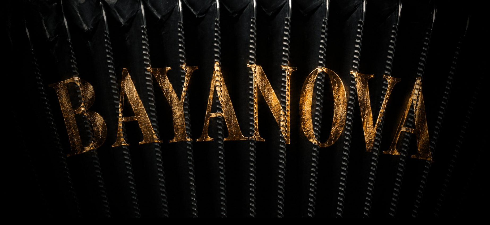

Chopin, Prelude No. 4
Делікатне, зосереджене звучання.
Філософія
Це живе сучасне звучання.
BayaNova — це мій погляд на баян: класична глибина, сучасний пульс, естрадна лірика і нове звучання інструмента.

Музика
Три приклади мого звучання: класика, сучасна попмузика та романтичні шлягери.
Делікатне, зосереджене звучання.
Сучасна подача й м’який грув.
Романтичний настрій і тепла мелодія.
Відео
Концертні фрагменти, жива атмосфера та різні сценічні образи — від камерного виконання до яскравих шоу-моментів.
Перейти до відеоНоти
Обробки популярних творів і концертного репертуару для виконавців, які хочуть сучасного звучання на баяні.
Перейти до нотСпівпраця
Відкритий до фестивальних запрошень, приватних подій, концертних виступів і спільних творчих проєктів.
18 Квітня, 2026
"Піаніст-переможець конкурсу Шопена заворожив мене"
The Times, Лондонський центр Барбікан
5 Червня, 2026
Фортепіанний фестиваль Рур
"Поет за фортепіано"
20 Травня, 2026
Ліндерхалле Штутгарт
"Першокласний дебют"